Creacion de Cliente y Empleados
Gestion de Reservas
Facturas
Crear tareas
Listar Tareas y cambiar sus estados
Creacion de Cliente y Empleados
Para navegarnos por este menu, deberemos de partirlo en 2 partes.
Parte 1: Persona
Empezaremos por crear la persona como tal. Cada uno tiene su error personalizado, asi que si hay algun campo que este mal.
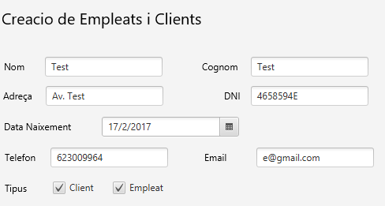Ahora, una vez se han introducido todos los datos de la persona, podemos elegir si queremos que sea un empleado, cliente o los dos. Pero minimo debe ser uno.
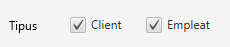Una vez seleccionado, pasamos a...
Parte 2.1: Cliente
Si se ha escogido la opcion de cliente, tambien habra que rellenar estos campos.
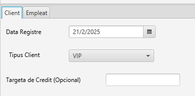Como se puede ver, tarjeta de credito es opcional, si no introduces nada, seguiria funcionando.
Parte 2.2: Empleado
Si se ha escogido la opcion de empleado, tambien habra que rellenar estos campos.
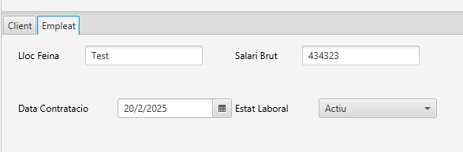Aqui se tienen que rellenar todos los campos.
Al acabar...
Al rellenar todo, le deberas de dar a crear. Tambien puedes reiniciar el formulario entero por si tienes que eliminar muchos campos y demas.
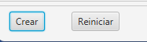Si ha habido algun error, te apareceran los errores tal que asi:
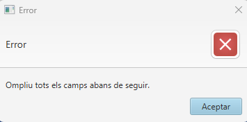Sigue las instrucciones del error, hasta que en algun punto, te saldra un mensaje tal que asi:
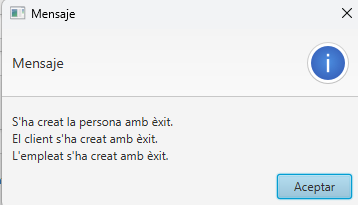Si no has seleccionado las dos opciones, en vez de salirte con que los dos se han creado con exito, te saldra solo el que hayas elegido.
Gestion de Reservas
Para navegarnos por este menu, tal como el anterior, lo partiremos en 4 partes, aunque 3 de ellas seran independientes una de la otra.
Parte 1: Busqueda de la persona
Esta parte es simple, el programa te pedira que introduzcas un DNI. Introduce el DNI del cliente al cual quieras hacerle la reserva.
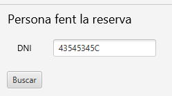Mensaje de Error
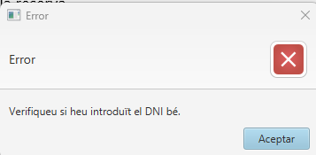Mensaje de Exito
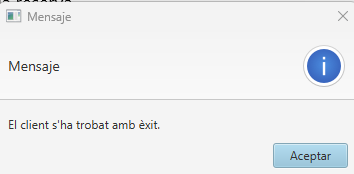Parte 2: Creacion de la Reserva
Como he comentado antes, a partir de ahora, cada parte es independiente. En esta parte, es para crear reservas, es rellenar los campos y hacer caso a los errores que salgan.
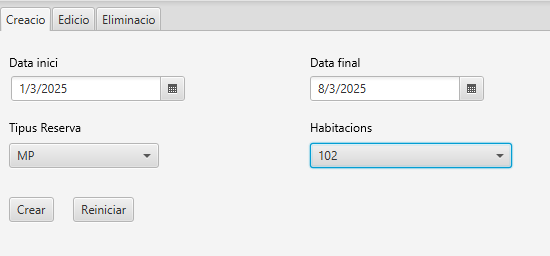Mensaje de Error:
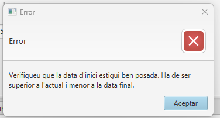Mensaje de Exito
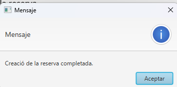Parte 3: Edicion de la Reserva
Como es edicion en vez de creacion, habra una parte que sea seleccionar una reserva. En la siguiente parte tambien se repetira. Los errores seran los mismos que la busqueda de cliente.
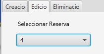Y una vez seleccionado, deberian salir los datos de la reserva.
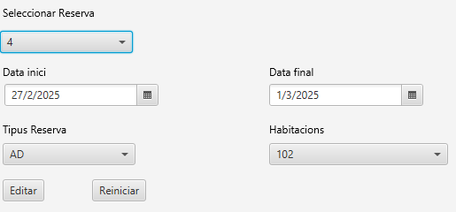Aqui deberias de cambiar lo que quieras, y una vez decidido lo que se quiera editar, le das a editar y se aplicarian los cambios.
Mensaje de Error:
Mensaje de Exito
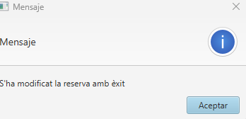Parte 4: Eliminacion de la Reserva
Este menu es bastante simple, solo se puede seleccionar la reserva, y darle a eliminar.
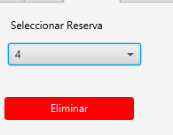Una vez le des, te saldra un mensaje de confirmacion, para asegurarte de que quieras eliminar la reserva.
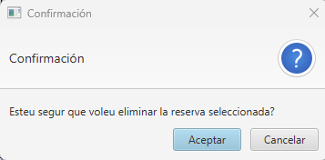Mensaje de Exito
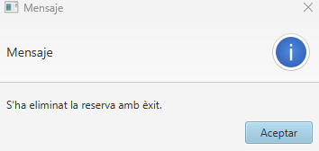Gestion de Facturas
Para navegar este menu, lo dividiremos, otra vez, en partes. Esta vez siendo un total de 3, 2 de ellas siendo independientes entre si.
Parte 1: Busqueda de la reserva
Esta parte es simple, el programa te pedira que introduzcas un DNI. Introduce el DNI del cliente, una vez seleccionado, elije la reserva que quieras.
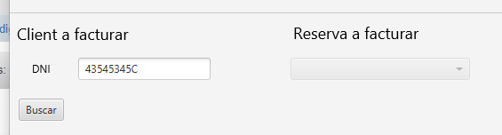Mensaje de Error
Mensaje de Exito
Una vez elegido, tocara elegir una reserva de las disponibles del cliente.
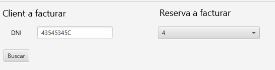Parte 2: Generar Factura
Esta y la siguiente parte son independientes.En la generacion de factura, el unico dato que se pide es el metodo de pago, ya que lo demas se lleva internamente. Una vez se seleccione uno, tendras que darle al boton de generar para generar una factura.
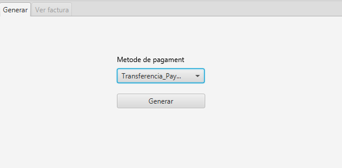Mensaje de Error
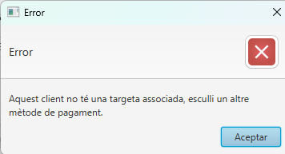Mensaje de Exito
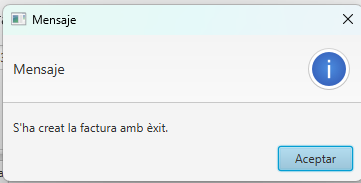Parte 3: Ver Factura
Una vez creada la factura, o se ha encontrado una factura previamente, se mostrara este menu. La unica cosa que se puede modificar en verdad es el metodo de pago.
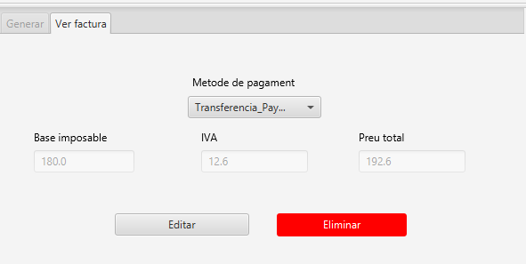Si se selecciona el boton de editar, si se ha cambiado algun cambio, se editara la factura.
Mensaje de Error:
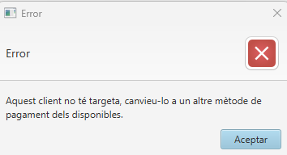Mensaje de Exito
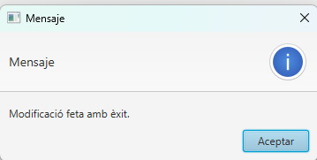Ahora, cuando se quiera eliminar algo, te tirara un mensaje de confirmacion.
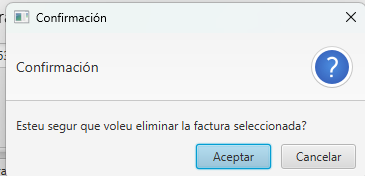Una vez se le de a aceptar, se elimina la factura.
Creacion Tarea
Para navegar este menu, como todos los menus, lo dividiremos en partes. Esta vez, todas las partes son independientes entre si.
Parte 1: Creacion de una tarea
Para crear una tarea, solo necesitaremos rellenar estos dos campos y darle a crear.
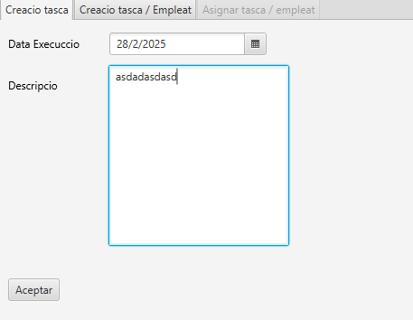Mensaje de Error
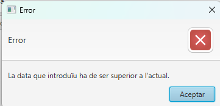Mensaje de Exito
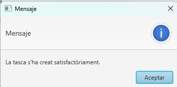Parte 2: Creacion de una tarea, y asignar un empleado a ella al inmediato.
Para esto, necesitaremos rellenar un campo mas, siendo el DNI del cliente. Como antes, tambien da error si no encuentra al cliente y demas.
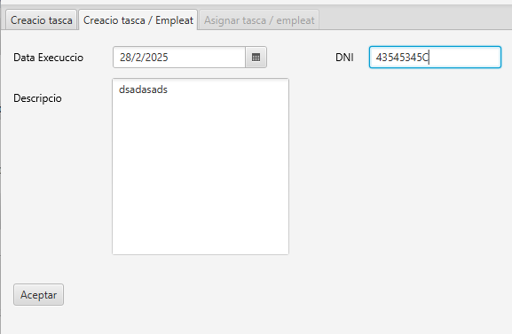Mensaje de Error
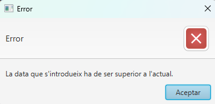Mensaje de Exito
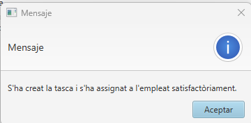Parte 3: Asignar un empleado a una tarea.
Aqui necesitaremos seleccionar una tarea, y introducir el DNI del empleado que queramos asignar a ella, dara error si ya esta asignado o no existe.
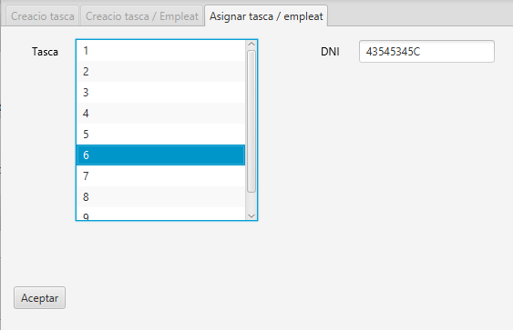Mensaje de Error
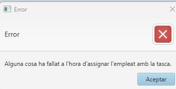Mensaje de Exito
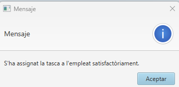Listar Tareas y cambiar sus estados
Para navegar por este menu, tendremos dos pestañas juntas en una, la primera siendo la seleccion de tarea o asignacion, y la segunda la edicion del estado.
Parte 1: Seleccion de la tarea o asignacion
Para esto, deberas de darle click a la tarea que quieras editar, y de paso te mostrara sus empleados.
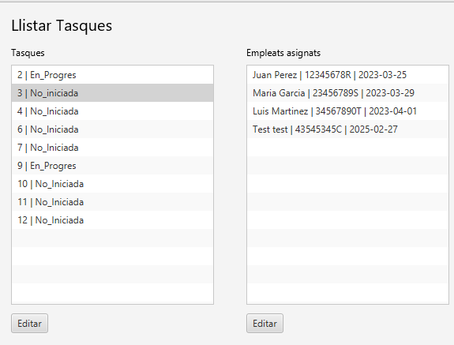Una vez escogido la tarea o el empleado asignado que quieras modificar, le deberas de dar al editar que este debajo de lo seleccionado.
Si se hace correctamente, deberia de saltarte el siguiente menu:
Parte 2: Modificacion de estado
Si has elegido tarea o asignacion da igual, te llevaran al mismo menu, siendo este.
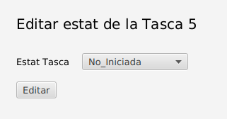Aqui dentro, deberas de modificar el estado a uno superior del actual. Si esta en completado, deberas de salirte del menu seleccionado cualquier cosa de la menubar.
Una vez elegido el que quieras, le das a editar, y dependiendo si lo has hecho bien o mal, saltara uno de los siguientes mensajes:
Mensaje de error:
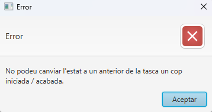Mensaje de confirmacion:
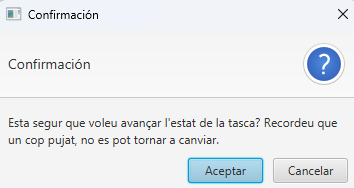Una vez se le de a que si, ya estaria completado la modificacion.